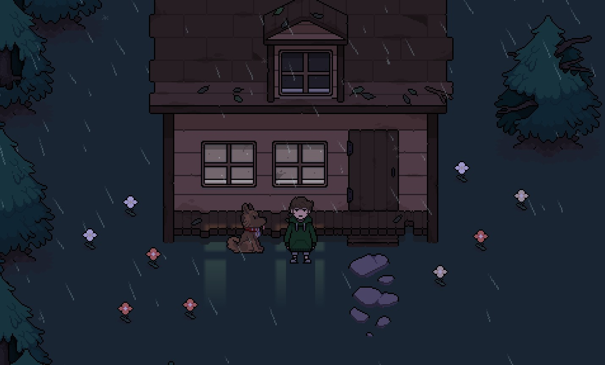

Original site:https://www.gopiratesoftware.com/
HeartBound

Лор - главный протагонист Heartbound. Тревожный молодой человек, который регулярно борется с внутренними потрясениями и негативными мыслями. Его мировоззрение может изменить то, как он воспринимает как общение с окружающими, так и окружающий его физический мир. Вместе со своим верным другом Бароном Лору удается справляться с этим каждый день. У Лора есть невероятно плохая привычка никогда не чистить его носки, и их можно найти почти повсюду.
Внешность: Лор имеет коричневые волосы и черные глаза. Изначально он носит пижаму, на этой пижаме полосы белого и синего цвета. Он также носит домашние тапочки с носками. При взаимодействии со шкафом он надевает на себя свой любимый зеленый свитер, что даёт ему больше здоровья в бою.
Личность:
Лор похоже действительно имеет довольно саркастичную и негативную личность которая проявляется мыслями о Бароне или тогда, когда Барон находится вместе с Лором. Он показывает себя очень решительным, когда это нужно
Заклинания: Хороший путь, попытка остановить Артефакт: Light Amplify Banish
Darksider Path, пытающийся остановить Артефакт: Dark Amplify Shatter
*Символы Guardian; Символы Darksider